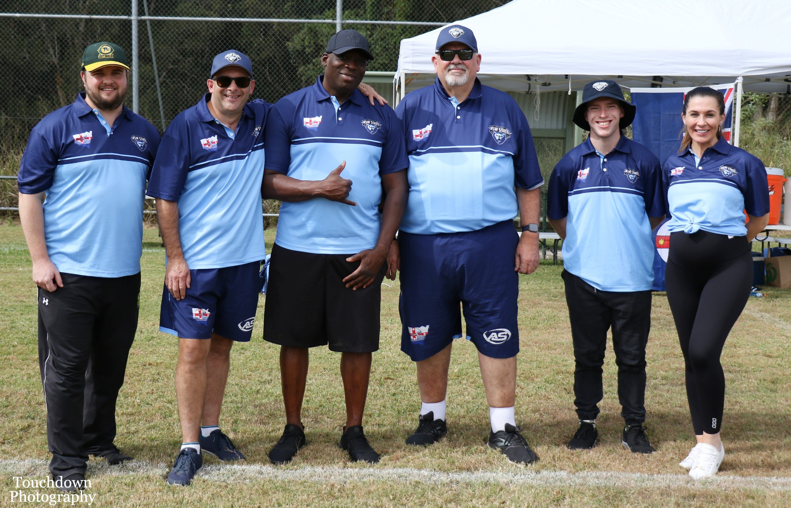
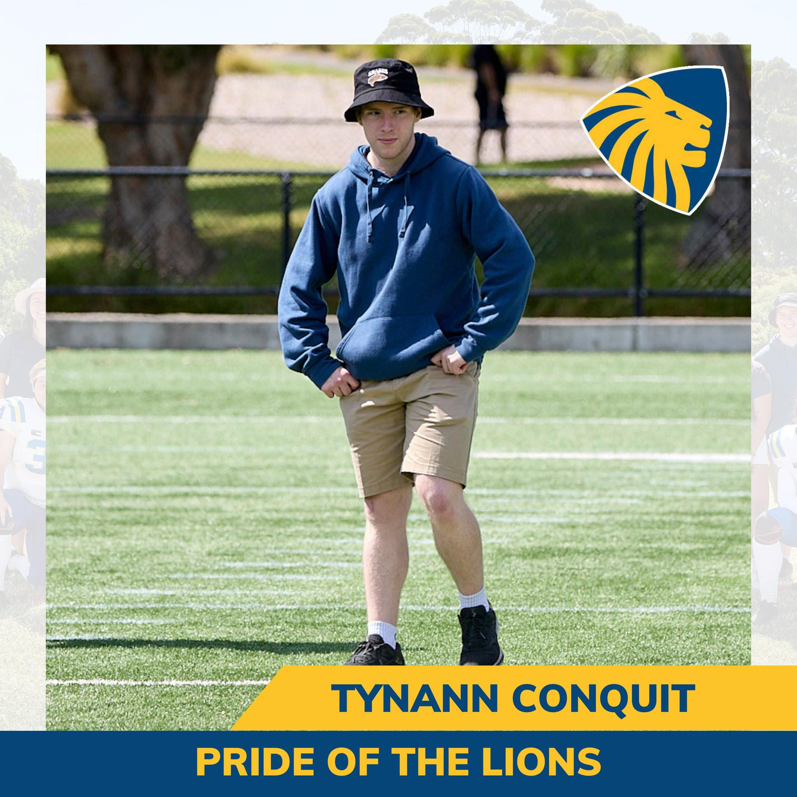

Tynnan Conquit
About Me
I am a soon-to-be-graduate Macquarie University student studying a Bachelors of Commerce, majoring
in Business
Analytics, and a Bachelors of Information Technology, majoring in Web and Mobile Application
Development.
I'm from the Central Coast, and outside of work and studies find time to enjoy sports, music,
tabletop card games, and video games. Two interesting facts about me:
1. I am qualified gridiron positional coach. I have had the privilege to coach the Sydney University
Womens Giridiron Team, and the NSW Coyotes (Womens state team).
2. I visited China on a holiday when I was 14.
This portfolio will help you learn more about me, and give you an opportunity to view some of my
work and connect if you like what you see.
Crew Coach at Hungry (March 2023 to present)
My role was expanded to included being the primary person to train new crew members. This meant
having a better understanding of all business tasks, and operating procedures
for training related to work health and safety. This is a steppingstone while I start training with
the goal of becoming a shift supervisor.
Education
Macquarie University (2019 to present)
- Bachelor of Commerce with a major in Business Analytics, Bachelor of Information Technology with a
major in web and mobile application development.
St Edwards Christian College Gosford (2013 to 2018)
- Atar: 80.15
Work Experience
Ballot counting for NSW State General Election (2019)
- This role was primarily sorting and organizing ballot papers. This would involve first taking all
of
the ballot papers from each region, sorting them into groups based on candidate, secondly,
we would form stacks of 100 ballots of each representative, and then finally submit electronically
how
many votes each candidate received. This was a 2-day contract.
Back of house crew member at Hungry Jacks, West Gosford (November 2021 to March 2023)
- My tasks vary depending on what time of day I start. If I start at 5am, I am focused on setting up
the
equipment and basic food needs ready to serve customers at 6am. Throughout the morning I
am preparing food for the day (fresh food like cheese, tomatoes, sauces etc.), or preparing frozen
foods
that will defrost for use the following day (such as chicken and bacon). I was involved in making
all the burgers, cooking fried foods like nuggets and fries, and maintaining level so there was
enough
cooked food for lunch and school rushes. I also helped with tasks like washing up, packing away
food and dry goods when it is delivered, and general store upkeep like sweeping and crushing boxes.
Skills
Programming Skills
|
- HTML
- CSS
- JavaScript
- Python
- Java
- React
- React Native
- Jest
- Node.js
- GitHub
- Markdown
|
- Expo
- Heroku
- Android Studio
- Jupyter Notebook
- Orange Data Miner
- Google Colab
- Gephi
- Netlytic
- SQL
- Mongo DB
|
Qualifications
- Working With Children’s Check
- Unrestricted Drivers License
- Responsible Service of Alcohol
- Responsible conduct of Gambling
Accomplishments
Independence within a team setting
My teammates don’t have a similar skillset to aid me if I got stuck. Thus, I had to be re-assured in
what I can do and what I cannot.
Time Management and Planning
The unstructured nature of the unit lead to me developing stronger time management skills.
This is evidenced as I have not missed any submission due dates yet.
Skills I want to improve
Hard skills
I want to improve my hard skills regarding development, specifically:
- Microsoft Azure
- .NET Framework
- Testing
Options to start improving these skills:
- TAFE NSW Short Courses
- Google Career Certificates
Teaching
Outside of university, I was given the opportunity to coach the NSW women’s gridiron team and work as a
crew coach at Hungry Jacks.

I tend to forget that people don’t have the experience that informs what I teach, and how.
To fix this, I need to involve teaching why we are doing specific actions and what lead up to this
decision.
I also need to improve my public speaking, however this has already seen improvements by performing more
customer service tasks.
Taking pride in the little things.
I don’t give myself enough credit for the small daily achievements like arriving to work on time and
saying hello to co-workers. These are just small steps within the bigger achievements like making an
effort in my education and having a plan for my future.
I am my own worst critic, and I need to learn to give myself credit as well as critiques.
Looking to a better future...
I want to foster a culture of learning wherever I go, trying to be a mentor, as having one has
benefitted me in my gridiron ventures, and helped upskill me as an employee.
I want to continue helping women’s and grassroots sport. These groups need volunteers and have given me
opportunities and experiences I will never forget.

Lets connect!
My Github
My LinkedIn